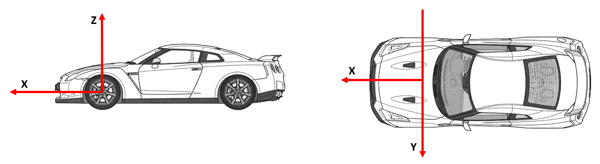
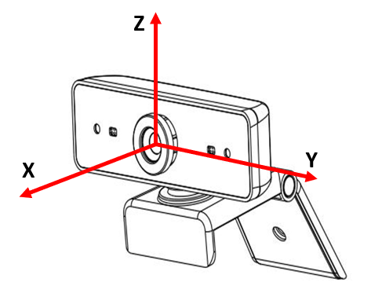
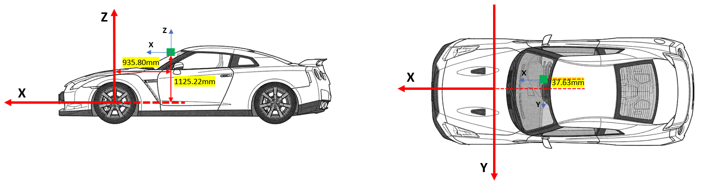
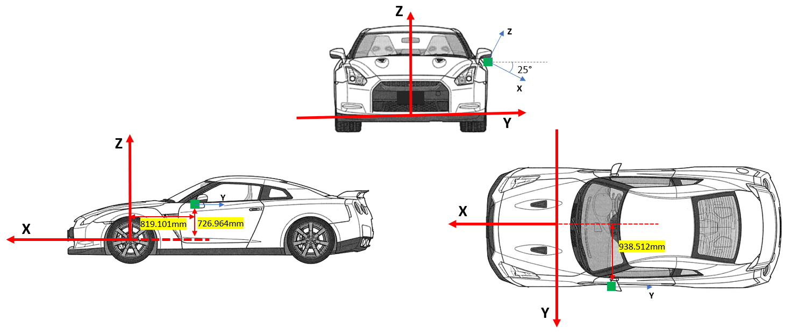

Sensor installation attitude description
background
Suppliers need to provide the installation location and angle of all sensors.Related definitions need to be followed below.
Car body coordinate system
XYZ is the top left of the front left

Sensor coordinate system
XYZ is the top left, the initial posture is the same as the car body. The final posture is to rotate in order of around the axis of its own moving shaft

Install local
Example one
|
Front tele camera |
x-distance camera mounting position to front axle center |
-935.80mm |
|
y-distance camera mounting position to vehicle center |
-37.63mm |
|
|
z-distance camera mounting position height to front axes center |
1125.22mm |
|
|
Yaw(Z) / Pitch(Y) / Roll(X) |
yaw=0° pitch=0° roll=0° |
Location

attitude
Roll/Pitch/Yaw is all 0, Sensor Coordinal System is the same as Car Body Coordinal System
Example II
|
Left SVC |
x-distance camera mounting position to front axle center |
-819.101mm |
|
y-distance camera mounting position to vehicle center |
938.512mm |
|
|
z-distance camera mounting position height to front axes center |
726.964mm |
|
|
Yaw(Z) / Pitch(Y) / Roll(X) |
yaw=90° pitch=25° roll=0° |
Location

attitude
Rotate in order of yaw → pitch → roll
First rotate the sensor Z axis 90 degrees, and then rotate 25 degrees around the sensor Y axis
In the end, you can refer to the figure above